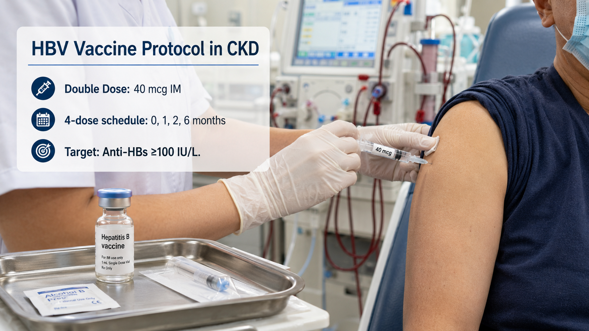
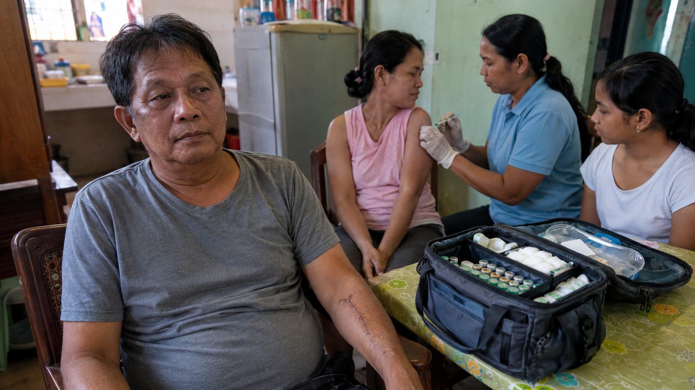
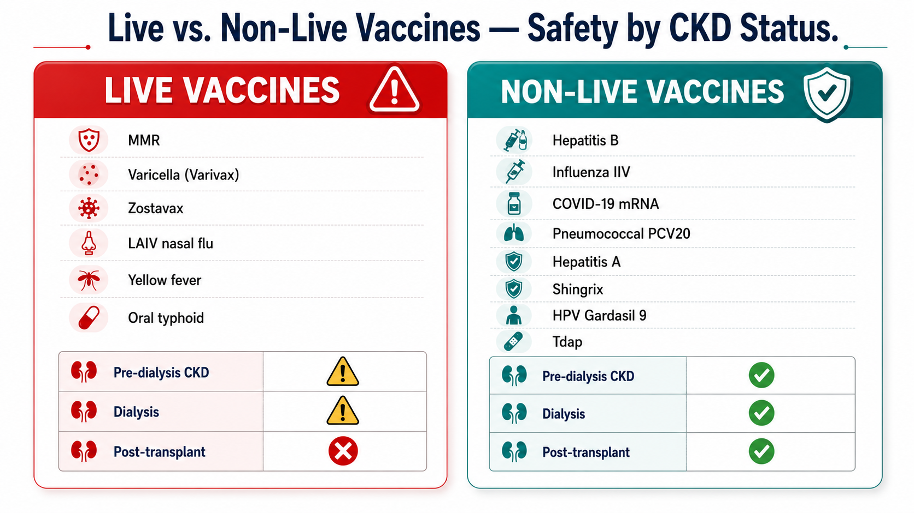
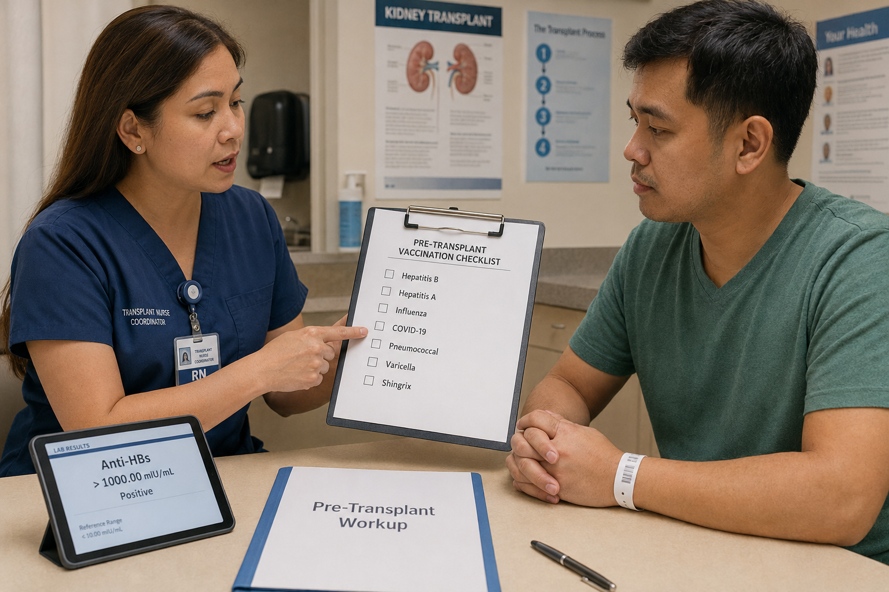

Why Viral Infections Hit Harder in Kidney DiseaseBakit Mas Matindi ang Epekto ng Viral na Impeksyon sa Sakit sa BatoNgano nga Mas Grabe ang Epekto sa Viral nga Impeksyon sa Sakit sa KidneyBakit Mas Matindi ing Epekto ning Viral na Impeksyon sa Sakit sa Batu
The immune system of a CKD patient is profoundly and specifically impaired — not simply "weakened" in a general sense. Uremic toxins that accumulate as kidney function declines directly interfere with neutrophil chemotaxis, T-lymphocyte activation, natural killer cell cytotoxicity, and B-cell antibody production. The result is a state of uremic immunoparalysis — the patient is simultaneously prone to infections they cannot fight and, paradoxically, prone to inflammatory conditions driven by dysregulated cytokine release.Ang immune system ng isang pasyenteng may CKD ay lubos at tiyak na nasugatan — hindi lamang "humina" sa pangkalahatang kahulugan. Ang mga uremic toxin na nag-iipon habang bumababa ang kidney function ay direktang nakakasagabal sa neutrophil chemotaxis, T-lymphocyte activation, natural killer cell cytotoxicity, at B-cell antibody production. Ang resulta ay isang estado ng uremic immunoparalysis — ang pasyente ay sabay na madaling kapitan ng mga impeksyon na hindi nila malabanan at, kabalintunaan, madaling magkaroon ng mga kondisyong nagsusulong ng pamamaga.Ang immune system sa usa ka pasyente nga adunay CKD grabeng ug espesipikong naanggaan — dili lang "humina" sa kinatibuk-ang pagsabot. Ang mga uremic toxin nga nag-iipon habang nagpaubos ang kidney function direkta nga nakabalabag sa neutrophil chemotaxis, T-lymphocyte activation, natural killer cell cytotoxicity, ug B-cell antibody production. Ang resulta usa ka estado sa uremic immunoparalysis — ang pasyente dungan nga daling maapektuhan sa mga impeksyon nga dili nila mapakig-away ug, paradoha, daling magkaon sa mga kondisyon nga gipadagan sa dysregulated nga cytokine release.Ing immune system ning metung a pasyenteng may CKD ya lubos at tiyak na nasugatan — ali lamang "humina" sa pangkalahatang kahulugan. Deng uremic toxin na nag-iipon habang bumababa ining kidney function ya direktang nakakasagabal sa neutrophil chemotaxis, T-lymphocyte activation, natural killer cell cytotoxicity, at B-cell antibody production. Ing resulta ya metung a estado ning uremic immunoparalysis — ing pasyente ya sabay na madaling kapitan ning deng impeksyon na ali nila malabanan at, kabalintunaan, madaling magkaroon ning deng kondisyong nagsusulong ning pamamaga.
This matters enormously for vaccination: vaccines produce weaker and shorter-lived antibody responses in CKD patients — requiring higher doses, more booster doses, and earlier timing than in healthy adults. A vaccine given too late (e.g., after dialysis initiation) may produce only half the antibody titre of the same vaccine given in CKD Stage 2–3. Timing is part of the treatment.Ito ay napakahalaga para sa pagbabakuna: ang mga bakuna ay nagpoprodyus ng mas mahinang at mas maikli ang buhay na antibody responses sa mga pasyenteng may CKD — nangangailangan ng mas mataas na dosis, mas maraming booster doses, at mas maagang oras kaysa sa malusog na matatanda. Ang isang bakunang ibinigay nang masyadong huli (hal., pagkatapos magsimula ang dialysis) ay maaaring magprodyus lamang ng kalahati ng antibody titre ng parehong bakuna na ibinigay sa CKD Stage 2–3. Ang oras ay bahagi ng paggamot.Kini importante kaayo alang sa pagbabakuna: ang mga bakuna nagprodukte og mas huyang ug mas mubo ang kinabuhi nga antibody responses sa mga pasyente nga may CKD — nagkinahanglan og mas taas nga dosis, mas daghang booster doses, ug mas sayo nga timing kaysa sa himsog nga mga hamtong. Ang usa ka bakuna nga gihatag nga masyadong ulahi (hal., human magsugod ang dialysis) mahimong magprodukte lamang og katunga sa antibody titre sa samang bakuna nga gihatag sa CKD Stage 2–3. Ang timing bahin sa pagtambal.Ini ya napakahalaga para king pagbabakuna: deng bakuna ya nagpoprodyus ning mas mahinang at mas maikli ining biye na antibody responses sa deng pasyenteng may CKD — nangangailangan ning mas matas a dosis, mas dacal a booster doses, at mas maagang oras kaysa sa malusog na matatanda. Ing metung a bakunang ibinigay nang masyadong huli (hal., kapabanuan magsimula ing dialysis) ya maaaring magprodyus lamang ning kalahati ning antibody titre ning parehong bakuna na ibinigay sa CKD Stage 2–3. Ing oras ya bahagi ning paggamut.
Uremic immunoparalysis is not a single defect — it is simultaneous failure across five arms of immunity. This is why viral infections that a healthy person clears in 5–7 days can trigger AKI, CKD progression, or death in a dialysis or advanced CKD patient.Ang uremic immunoparalysis ay hindi isang solong depekto — ito ay sabay-sabay na kabiguan sa limang bahagi ng immunity. Kaya naman ang mga viral na impeksyon na nililinis ng isang malusog na tao sa loob ng 5–7 araw ay maaaring mag-trigger ng AKI, pag-unlad ng CKD, o kamatayan sa isang pasyenteng nasa dialysis o advanced CKD.Ang uremic immunoparalysis dili usa ka solong depekto — kini dungan nga kabigoan sa lima ka braso sa immunity. Mao kini ang hinungdan nga ang mga viral nga impeksyon nga gilimpyohan sa usa ka himsog nga tawo sulod sa 5–7 ka adlaw mahimong mag-trigger sa AKI, pag-uswag sa CKD, o kamatayon sa usa ka pasyente nga naa sa dialysis o advanced CKD.Ing uremic immunoparalysis ya ali metung a solong depekto — ini ya sabay-sabay na kabiguan sa limang bahagi ning immunity. Kaya naman deng viral na impeksyon na nililinis ning metung a malusog na tao sa loob ning 5–7 aldo ya maaaring mag-trigger ning AKI, pag-unlad ning CKD, o kamatayan sa metung a pasyenteng nasa dialysis o advanced CKD.
The vaccine timing paradoxAng paradox ng oras ng bakunaAng paradox sa timing sa bakunaIng paradox ning oras ning bakuna
CKD patients need vaccines most urgently — but respond to them least effectively. The practical implication: vaccinate early, while eGFR is still above 30 mL/min. Seroconversion rates for hepatitis B vaccine are 95% in healthy adults, 80% in CKD Stage 3, 60% in CKD Stage 4–5, and only 50–60% in dialysis patients. Every month of delay is lost immunogenicity. Vaccines given before dialysis initiation are measurably more effective than those given after.Ang mga pasyenteng may CKD ay pinaka-kailangan ng mga bakuna — ngunit sila ang pinakamababa ang tugon sa mga ito. Ang praktikal na implikasyon: magbakuna nang maaga, habang ang eGFR ay nasa itaas pa ng 30 mL/min. Ang mga rate ng seroconversion para sa hepatitis B vaccine ay 95% sa malusog na matatanda, 80% sa CKD Stage 3, 60% sa CKD Stage 4–5, at 50–60% lamang sa mga pasyenteng nasa dialysis. Bawat buwang pagkaantala ay nawawalang immunogenicity. Ang mga bakunang ibinigay bago ang pagsisimula ng dialysis ay mas epektibo kaysa sa mga ibinigay pagkatapos.Ang mga pasyente nga may CKD labing nagkinahanglan sa mga bakuna — apan sila labing dili morespondi sa mga kini. Ang praktikal nga implikasyon: magbakuna og sayo, samtang ang eGFR labaw pa sa 30 mL/min. Ang mga rate sa seroconversion alang sa hepatitis B vaccine 95% sa himsog nga mga hamtong, 80% sa CKD Stage 3, 60% sa CKD Stage 4–5, ug 50–60% lamang sa mga pasyente sa dialysis. Ang matag buwan sa pagpapalangan nawala nga immunogenicity. Ang mga bakuna nga gihatag sa wala pa magsugod ang dialysis mas epektibo kaysa sa mga gihatag pagkatapos.Deng pasyenteng may CKD ya pinaka-kailangan ning deng bakuna — ngarud sila ing pinakamababa ing tugon sa deng ini. Ing praktikal na implikasyon: magbakuna nang maaga, habang ing eGFR ya nasa itaas pa ning 30 mL/min. Deng rate ning seroconversion para king hepatitis B vaccine ya 95% sa malusog na matatanda, 80% sa CKD Stage 3, 60% sa CKD Stage 4–5, at 50–60% lamang sa deng pasyenteng nasa dialysis. Bawat bulang pagkaantala ya nawaalang immunogenicity. Deng bakunang ibinigay bago ing pagsisimula ning dialysis ya mas epektibo kaysa sa deng ibinigay kapabanuan.
AKI from viral infection — the kidney's secondary injuryAKI mula sa viral na impeksyon — ang pangalawang pinsala ng batoAKI gikan sa viral nga impeksyon — ang ikaduhang daut sa kidneyAKI mula sa viral na impeksyon — ing pangalawang pinsala nining batu
Viral infections cause AKI in CKD patients through four simultaneous mechanisms: (1) direct tubular cytopathic effect of the virus; (2) sepsis-mediated renal vasoconstriction and ischaemia; (3) rhabdomyolysis from severe myalgia; (4) immune complex deposition in the glomerulus triggering glomerulonephritis. Each hospitalization for viral illness in a CKD patient accelerates the rate of eGFR decline measurably — further emphasizing that prevention is treatment.Ang mga viral na impeksyon ay nagdudulot ng AKI sa mga pasyenteng may CKD sa pamamagitan ng apat na sabay-sabay na mekanismo: (1) direktang tubular cytopathic effect ng virus; (2) sepsis-mediated renal vasoconstriction at ischemia; (3) rhabdomyolysis mula sa matinding myalgia; (4) immune complex deposition sa glomerulus na nag-trigger ng glomerulonephritis. Bawat hospitalisasyon para sa viral na sakit sa isang pasyenteng may CKD ay nagpapabilis ng rate ng pagbaba ng eGFR — na lalo na nagbibigay-diin na ang pag-iwas ay paggamot.Ang mga viral nga impeksyon nagdulot sa AKI sa mga pasyente nga may CKD pinaagi sa upat ka dungan nga mekanismo: (1) direkta nga tubular cytopathic effect sa virus; (2) sepsis-mediated renal vasoconstriction ug ischemia; (3) rhabdomyolysis gikan sa grabe nga myalgia; (4) immune complex deposition sa glomerulus nga nag-trigger sa glomerulonephritis. Ang matag hospitalisasyon alang sa viral nga sakit sa usa ka pasyente nga may CKD nagpapaspas sa rate sa pagkunhod sa eGFR — labi nga nagpasiugda nga ang paglikay mao ang pagtambal.Deng viral na impeksyon ya nagdudulot ning AKI sa deng pasyenteng may CKD sa pamamagitan ning apat na sabay-sabay na mekanismo: (1) direktang tubular cytopathic effect ning virus; (2) sepsis-mediated renal vasoconstriction at ischemia; (3) rhabdomyolysis mula sa matinding myalgia; (4) immune complex deposition sa glomerulus na nag-trigger ning glomerulonephritis. Bawat hospitalisasyon para king viral na sakit sa metung a pasyenteng may CKD ya nagpapabilis ning rate ning pagbaba ning eGFR — na lalo na nagbibigay-diin na ing pag-iwas ya paggamut.
The Six Viral Threats Every CKD Patient Must KnowAng Anim na Viral na Banta na Dapat Malaman ng Bawat Pasyenteng May CKDAng Unom ka Viral nga Hulga nga Kinahanglan Mahibal-an sa Matag Pasyente nga May CKDIng Anim na Viral na Banta na Dapat Malaman ning Bawat Pasyenteng May CKD
Why CKD patients are especially vulnerableBakit lalo na mahina ang mga pasyenteng may CKDNgano labi ka-huyang ang mga pasyente nga may CKDBakit lalo na mahina deng pasyenteng may CKD
- Dialysis blood circuit = repeated blood exposure riskBlood circuit ng dialysis = paulit-ulit na panganib ng pagkalantad sa dugoBlood circuit sa dialysis = balik-balik nga peligro sa pagkabutyag sa dugoBlood circuit ning dialysis = paulit-ulit na panganib ning pagkalantad sa daya
- Shared needles at dialysis centers historically — strict universal precautions requiredNakaraang pagbabahagi ng karayom sa mga dialysis center — kinakailangan ng mahigpit na universal precautionsNaunang pagpaambit sa mga dagom sa mga dialysis center — gikinahanglan ang estrikto nga universal precautionsNakaraang pagbabahagi ning karayom sa deng dialysis center — kinakailangan ning mahigpit na universal precautions
- CKD patients → fulminant hepatic failure at 10× higher rate than general populationMga pasyenteng may CKD → fulminant hepatic failure sa 10× na mas mataas na rate kaysa sa pangkalahatang populasyonMga pasyente nga may CKD → fulminant hepatic failure sa 10× mas taas nga rate kaysa sa kinatibuk-ang populasyonDeng pasyenteng may CKD → fulminant hepatic failure sa 10× na mas matas a rate kaysa sa pangkalahatang populasyon
- HBV reactivation with immunosuppression (transplant) can be rapidly fatalAng muling pag-aktibo ng HBV sa immunosuppression (transplant) ay maaaring mabilis na maging nakamamatayAng pag-reaktibo sa HBV sa immunosuppression (transplant) mahimong dali nga makamatayIng muling pag-aktibo ning HBV sa immunosuppression (transplant) ya maaaring mabilis na maging nakamamatay
- Carrier state (chronic HBV) → cirrhosis + hepatocellular carcinoma over yearsCarrier state (talamak na HBV) → cirrhosis + hepatocellular carcinoma sa paglipas ng mga taonCarrier state (kronikong HBV) → cirrhosis + hepatocellular carcinoma sa paglabay sa mga tuigCarrier state (talamak na HBV) → cirrhosis + hepatocellular carcinoma sa paglipas ning dening banua
CKD-specific managementPamamahala na tukoy sa CKDPagdumala nga espesipiko sa CKDPamamahala na tukoy sa CKD
All CKD patients must be screened for HBsAg, anti-HBs, and anti-HBc at diagnosis. All seronegative patients vaccinated immediately — double-dose, extended schedule (see HBV section). Dialysis patients: monthly HBsAg surveillance. Anti-HBV antivirals (tenofovir, entecavir) require dose adjustment in CKD — adefovir is no longer recommended. Active HBV + CKD Stage 4–5 requires specialist co-management (hepatology + nephrology).Lahat ng pasyenteng may CKD ay dapat suriin para sa HBsAg, anti-HBs, at anti-HBc sa diagnosis. Lahat ng seronegative na pasyente ay agad na bakunahan — double-dose, extended schedule. Mga pasyenteng nasa dialysis: buwanang HBsAg surveillance. Ang mga anti-HBV antiviral (tenofovir, entecavir) ay nangangailangan ng dose adjustment sa CKD. Ang aktibong HBV + CKD Stage 4–5 ay nangangailangan ng co-management ng espesyalista (hepatolohiya + nefrolohiya).Ang tanan nga pasyente nga may CKD kinahanglan susihon alang sa HBsAg, anti-HBs, ug anti-HBc sa diagnosis. Ang tanan nga seronegative nga pasyente agad nga bakunahan — double-dose, extended schedule. Mga pasyente sa dialysis: binulanang HBsAg surveillance. Ang mga anti-HBV antiviral (tenofovir, entecavir) nagkinahanglan og dose adjustment sa CKD. Ang aktibong HBV + CKD Stage 4–5 nagkinahanglan og co-management sa espesyalista (hepatolohiya + nefrolohiya).Lahat ning pasyenteng may CKD ya dapat suriin para king HBsAg, anti-HBs, at anti-HBc sa diagnosis. Lahat ning seronegative na pasyente ya agad na bakunahan — double-dose, extended schedule. Deng pasyenteng nasa dialysis: bulanang HBsAg surveillance. Deng anti-HBV antiviral (tenofovir, entecavir) ya nangangailangan ning dose adjustment sa CKD. Ing aktibong HBV + CKD Stage 4–5 ya nangangailangan ning co-management ning espesyalista (hepatolohiya + nefrolohiya).
Why it hits CKD harderBakit mas matindi ang epekto nito sa CKDNgano nga mas grabe ang epekto niini sa CKDBakit mas matindi ing epekto nini sa CKD
- Influenza pneumonia 5× more lethal in ESKD than in healthy adultsAng influenza pneumonia ay 5× na mas nakamamatay sa ESKD kaysa sa malusog na matatandaAng influenza pneumonia 5× mas makamatay sa ESKD kaysa sa himsog nga mga hamtongIng influenza pneumonia ya 5× na mas nakamamatay sa ESKD kaysa sa malusog na matatanda
- Secondary bacterial pneumonia (Streptococcus, Staphylococcus) = leading cause of death post-influenza in dialysisPangalawang bacterial pneumonia (Streptococcus, Staphylococcus) = nangungunang dahilan ng kamatayan pagkatapos ng influenza sa dialysisIkaduhang bacterial pneumonia (Streptococcus, Staphylococcus) = nanguna nga hinungdan sa kamatayon human sa influenza sa dialysisPangalawang bacterial pneumonia (Streptococcus, Staphylococcus) = nangungunang dahilan ning kamatayan kapabanuan ning influenza king dialysis
- Myositis-related rhabdomyolysis → AKI superimposed on CKDRhabdomyolysis na kaugnay ng myositis → AKI na naidagdag sa CKDRhabdomyolysis nga may kalabutan sa myositis → AKI nga gidugang sa CKDRhabdomyolysis na kaugnay ning myositis → AKI na naidagdag sa CKD
- Fluid shifts from fever and poor intake → dangerous in fluid-restricted patientsPaglipat ng likido mula sa lagnat at mahinang pagkain → mapanganib sa mga pasyenteng may limitasyon sa likidoPaglihok sa likido gikan sa hilanat ug diyutay nga pagkaon → delikado sa mga pasyente nga adunay limitasyon sa likidoPaglipat ning likido mula sa lagnat at mahinaning pamangan → mapanganib sa deng pasyenteng may limitasyon sa likido
- Antiviral oseltamivir (Tamiflu): dose must be halved in eGFR <30 mL/minAntiviral oseltamivir (Tamiflu): ang dosis ay dapat hatiin sa eGFR <30 mL/minAntiviral oseltamivir (Tamiflu): ang dosis kinahanglan bahin-bahinon sa eGFR <30 mL/minAntiviral oseltamivir (Tamiflu): ing dosis ya dapat hatiin sa eGFR <30 mL/min
Prevention and treatmentPag-iwas at paggamotPaglikay ug pagtambalPag-iwas at paggamut
Annual inactivated influenza vaccination is the highest-priority, lowest-risk intervention in CKD — safe in all CKD stages, all dialysis modalities, and post-transplant (inactivated form). High-dose or adjuvanted influenza vaccine (Fluzone HD, Fluad) produces superior antibody response in immunocompromised patients — preferred when available. Neuraminidase inhibitors (oseltamivir 75 mg → 30 mg in eGFR <30) should be started within 48 hours of symptom onset.Ang taunang inactivated influenza vaccination ay ang pinaka-mataas na priyoridad, pinakamababang panganib na interbensyon sa CKD — ligtas sa lahat ng yugto ng CKD, lahat ng modalidad ng dialysis, at post-transplant. Ang high-dose o adjuvanted influenza vaccine (Fluzone HD, Fluad) ay nagpoprodyus ng mas mataas na antibody response sa mga immunocompromised na pasyente. Ang mga neuraminidase inhibitor (oseltamivir 75 mg → 30 mg sa eGFR <30) ay dapat simulan sa loob ng 48 oras ng pagsisimula ng sintomas.Ang tinuig nga inactivated influenza vaccination labing taas nga priyoridad, labing ubos nga peligro nga interbensyon sa CKD — luwas sa tanan nga yugto sa CKD, tanan nga modalidad sa dialysis, ug post-transplant. Ang high-dose o adjuvanted influenza vaccine (Fluzone HD, Fluad) nagprodukte og mas taas nga antibody response sa mga immunocompromised nga pasyente. Ang mga neuraminidase inhibitor (oseltamivir 75 mg → 30 mg sa eGFR <30) kinahanglan sugdon sulod sa 48 ka oras sa pagsugod sa mga sintomas.Ing taunang inactivated influenza vaccination ya ing pinaka-matas a priyoridad, pinakamababang panganib na interbensyon sa CKD — ligtas king amin ning yugto ning CKD, lahat ning modalidad ning dialysis, at post-transplant. Ing high-dose o adjuvanted influenza vaccine (Fluzone HD, Fluad) ya nagpoprodyus ning mas matas a antibody response sa deng immunocompromised na pasyente. Deng neuraminidase inhibinir (oseltamivir 75 mg → 30 mg sa eGFR <30) ya dapat simulan sa loob ning 48 oras ning pagsisimula ning sintomas.
CKD-specific COVID burdenPasanin ng COVID na tukoy sa CKDPalas-anon sa COVID nga espesipiko sa CKDPasanin ning COVID na tukoy sa CKD
- Dialysis patients: 30-day COVID mortality 20–25% in early pandemic (USRDS 2021)Mga pasyenteng nasa dialysis: 30-araw na COVID mortality na 20–25% sa simula ng pandemya (USRDS 2021)Mga pasyente sa dialysis: 30-adlaw nga COVID mortality nga 20–25% sa sinugdanan sa pandemya (USRDS 2021)Deng pasyenteng nasa dialysis: 30-aldo na COVID mortality na 20–25% sa simula ning pandemya (USRDS 2021)
- CKD Stage 3–5 non-dialysis: 2–3× higher ICU admission than general populationCKD Stage 3–5 na hindi dialysis: 2–3× na mas mataas na ICU admission kaysa sa pangkalahatang populasyonCKD Stage 3–5 nga dili dialysis: 2–3× mas taas nga ICU admission kaysa sa kinatibuk-ang populasyonCKD Stage 3–5 na ali dialysis: 2–3× na mas matas a ICU admission kaysa sa pangkalahatang populasyon
- Direct viral ACE2 receptor-mediated tubular injury → AKI in 20–40% of hospitalized COVID patientsDirektang viral ACE2 receptor-mediated tubular injury → AKI sa 20–40% ng mga hospitalized na pasyenteng may COVIDDirekta nga viral ACE2 receptor-mediated tubular injury → AKI sa 20–40% sa mga hospitalized nga pasyente nga may COVIDDirektang viral ACE2 receptor-mediated tubular injury → AKI sa 20–40% ning deng hospitalized na pasyenteng may COVID
- Post-COVID accelerated CKD progression documented at 12 months even after mild infectionPost-COVID na pinabilis na pag-unlad ng CKD ay naitalaan sa loob ng 12 buwan kahit pagkatapos ng banayad na impeksyonPost-COVID nga pinaspasan nga pag-uswag sa CKD nadokumento sa 12 ka bulan bisan human sa banayad nga impeksyonPost-COVID na pinabilis na pag-unlad ning CKD ya naitalaan sa loob ning 12 bulan kahit kapabanuan ning banayad na impeksyon
- Immunosuppressed transplant patients: prolonged viral shedding for weeks to monthsMga pasyenteng transplant na immunosuppressed: matagal na viral shedding sa loob ng mga linggo hanggang buwanMga pasyente sa transplant nga immunosuppressed: taas nga viral shedding sulod sa mga semana hangtud bulanDeng pasyenteng transplant na immunosuppressed: matagal na viral shedding sa loob ning dening lutu hangganing bulan
Vaccination and antiviralsPagbabakuna at mga antiviralPagbabakuna ug mga antiviralPagbabakuna at deng antiviral
COVID vaccination significantly reduces hospitalization and mortality in CKD even with attenuated antibody response. Primary series + booster doses strongly recommended. Antivirals: nirmatrelvir/ritonavir (Paxlovid) requires dose reduction if eGFR 30–60 mL/min; contraindicated if eGFR <30. Remdesivir IV: use with caution in eGFR <30 (excipient accumulation). Molnupiravir: no dose adjustment needed in CKD. Start antivirals within 5 days of symptom onset.Ang COVID vaccination ay makabuluhang nagpapababa ng hospitalisasyon at kamatayan sa CKD kahit may pinaghinang antibody response. Lubos na inirerekomenda ang primary series + booster doses. Mga antiviral: ang nirmatrelvir/ritonavir (Paxlovid) ay nangangailangan ng pagbabago ng dosis kung eGFR 30–60 mL/min; kontraindikado kung eGFR <30. Remdesivir IV: gumamit nang may pag-iingat sa eGFR <30. Molnupiravir: walang kinakailangang pagbabago ng dosis sa CKD. Simulan ang mga antiviral sa loob ng 5 araw ng pagsisimula ng sintomas.Ang COVID vaccination makisabutan nagpubos sa hospitalisasyon ug kamatayon sa CKD bisan adunay pinaghinang antibody response. Lubos nga girekomendar ang primary series + booster doses. Mga antiviral: ang nirmatrelvir/ritonavir (Paxlovid) nagkinahanglan og pagbag-o sa dosis kung eGFR 30–60 mL/min; kontraindikado kung eGFR <30. Remdesivir IV: gamiton nga may pag-amping sa eGFR <30. Molnupiravir: walay gikinahanglan nga pagbag-o sa dosis sa CKD. Sugdon ang mga antiviral sulod sa 5 ka adlaw sa pagsugod sa mga sintomas.Ing COVID vaccination ya makabuluhang nagpapababa ning hospitalisasyon at kamatayan sa CKD kahit may pinaghinang antibody response. Lubos na inirerekomenda ing primary series + booster doses. Deng antiviral: ing nirmatrelvir/rininavir (Paxlovid) ya nangangailangan ning pagbabago ning dosis nung eGFR 30–60 mL/min; kontraindikado nung eGFR <30. Remdesivir IV: gumamit nang may pag-iingat sa eGFR <30. Molnupiravir: alang kinakailangang pagbabago ning dosis sa CKD. Simulan deng antiviral sa loob ning 5 aldo ning pagsisimula ning sintomas.
The unique CKD dangerAng natatanging panganib sa CKDAng nag-iisang peligro sa CKDIng natatanging panganib sa CKD
- Primary varicella (chickenpox) in adult CKD patients → visceral dissemination, hepatitis, pneumoniaPangunahing varicella (bulutong-tubig) sa mga matatandang pasyenteng may CKD → visceral dissemination, hepatitis, pneumoniaPangunahing varicella (bulutong-tubig) sa mga hamtong nga pasyente nga may CKD → visceral dissemination, hepatitis, pneumoniaPangunahing varicella (bulutong-danum) sa deng matatandang pasyenteng may CKD → visceral dissemination, hepatitis, pneumonia
- Herpes zoster (shingles): 2–4× higher incidence in CKD; disseminated zoster in transplant patients can be fatalHerpes zoster: 2–4× na mas mataas na insidensya sa CKD; ang disseminated zoster sa mga pasyenteng transplant ay maaaring nakamamatayHerpes zoster: 2–4× mas taas nga insidensya sa CKD; ang disseminated zoster sa mga pasyente sa transplant mahimong makamatayHerpes zoster: 2–4× na mas matas a insidensya sa CKD; ing disseminated zoster sa deng pasyenteng transplant ya maaaring nakamamatay
- Acyclovir: dose reduction mandatory in CKD (crystalline nephropathy risk at standard doses)Acyclovir: ipinag-uutos ang pagbabago ng dosis sa CKD (panganib ng crystalline nephropathy sa karaniwang dosis)Acyclovir: gikinahanglan ang pagbawas sa dosis sa CKD (peligro sa crystalline nephropathy sa standard nga dosis)Acyclovir: ipinag-uutos ing pagbabago ning dosis sa CKD (panganib ning crystalline nephropathy sa karaniwang dosis)
- Valacyclovir: preferred oral antiviral — dose adjusted by eGFR (see prescribing)Valacyclovir: piniling oral antiviral — ang dosis ay ina-adjust batay sa eGFRValacyclovir: gipalabi nga oral antiviral — ang dosis gi-adjust base sa eGFRValacyclovir: piniling oral antiviral — ing dosis ya ina-adjust batay sa eGFR
- Zoster ophthalmicus (eye involvement): urgent ophthalmology referralZoster ophthalmicus (may kasangkot na mata): agarang referral sa ophthalmologyZoster ophthalmicus (may kalabtan ang mata): dali nga referral sa ophthalmologyZoster ophthalmicus (may kasangkot na mata): agarang referral sa ophthalmology
Vaccination strategyEstratehiya sa pagbabakunaEstratehiya sa pagbabakunaEstratehiya sa pagbabakuna
Recombinant zoster vaccine (Shingrix) — non-live, safe in CKD and immunocompromised patients — is the preferred zoster vaccine. Two doses 2–6 months apart. Recommended for all CKD patients ≥50 years and all transplant candidates regardless of age (ideally before transplant). The older live Zostavax vaccine is contraindicated post-transplant. Shingrix is not yet universally available in all Philippine centers — inquire at your center or travel medicine clinic.Recombinant zoster vaccine (Shingrix) — hindi buhay, ligtas sa CKD at immunocompromised na pasyente — ang piniling zoster vaccine. Dalawang dosis na 2–6 buwan ang agwat. Inirerekomenda para sa lahat ng pasyenteng may CKD na ≥50 taon at lahat ng transplant candidates anuman ang edad. Ang mas lumang live Zostavax vaccine ay kontraindikado post-transplant. Hindi pa lahat ng Philippine centers ay may Shingrix.Recombinant zoster vaccine (Shingrix) — dili buhi, luwas sa CKD ug immunocompromised nga mga pasyente — ang gipalabi nga zoster vaccine. Duha ka dosis nga 2–6 ka bulan ang agwat. Girekomendar alang sa tanan nga pasyente nga may CKD ≥50 ka tuig ug tanan nga transplant candidates bisan unsa ang edad. Ang mas daan nga live Zostavax vaccine kontraindikado post-transplant. Wala pa sa tanan nga Philippine centers ang Shingrix.Recombinant zoster vaccine (Shingrix) — ali biye, ligtas sa CKD at immunocompromised na pasyente — ing piniling zoster vaccine. Dalawang dosis na 2–6 bulan ing agwat. Inirerekomenda para king lahat ning pasyenteng may CKD na ≥50 banua at lahat ning transplant candidates anuman ing edad. Ing mas lumang live Zostavax vaccine ya kontraindikado post-transplant. Ali pa lahat ning Philippine centers ya may Shingrix.
HCV in CKDHCV sa CKDHCV sa CKDHCV sa CKD
- HCV prevalence in Philippine dialysis centers: 10–20% (vs <1% in general population)Prevalence ng HCV sa mga Philippine dialysis center: 10–20% (kumpara sa <1% sa pangkalahatang populasyon)Prevalence sa HCV sa mga Philippine dialysis center: 10–20% (kumpara sa <1% sa kinatibuk-ang populasyon)Prevalence ning HCV sa deng Philippine dialysis center: 10–20% (kumpara king <1% sa pangkalahatang populasyon)
- HCV causes membranoproliferative glomerulonephritis — direct kidney diseaseAng HCV ay nagdudulot ng membranoproliferative glomerulonephritis — direktang sakit sa batoAng HCV nagdulot sa membranoproliferative glomerulonephritis — direkta nga sakit sa kidneyIng HCV ya nagdudulot ning membranoproliferative glomerulonephritis — direktaning sakit sa batu
- HCV + CKD → accelerated hepatic fibrosis from uremiaHCV + CKD → pinabilis na hepatic fibrosis mula sa uremiaHCV + CKD → pinaspasan nga hepatic fibrosis gikan sa uremiaHCV + CKD → pinabilis na hepatic fibrosis mula sa uremia
- Cryoglobulinemic vasculitis from HCV → membranous nephropathyCryoglobulinemic vasculitis mula sa HCV → membranous nephropathyCryoglobulinemic vasculitis gikan sa HCV → membranous nephropathyCryoglobulinemic vasculitis mula sa HCV → membranous nephropathy
- No vaccine exists — prevention = universal precautions at dialysisWalang bakuna — pag-iwas = universal precautions sa dialysisWalay bakuna — paglikay = universal precautions sa dialysisAlang bakuna — pag-iwas = universal precautions king dialysis
Treatment in CKD — now highly effectivePaggamot sa CKD — epektibo na ngayonPagtambal sa CKD — epektibo na karonPaggamut sa CKD — epektibo na ngayon
Direct-acting antivirals (DAAs) achieve >95% SVR12 (sustained viral response = functional cure) even in CKD and dialysis. Glecaprevir/pibrentasvir (Maviret) — safe in all CKD stages including eGFR <30 — is preferred for CKD. Sofosbuvir-based regimens: avoid if eGFR <30 (renal excretion of GS-331007 metabolite). 8–12 week courses. Treatment dramatically slows CKD progression and is now a standard-of-care recommendation before kidney transplantation.Ang mga direct-acting antiviral (DAA) ay nakakamit ng >95% SVR12 (sustained viral response = functional cure) kahit sa CKD at dialysis. Glecaprevir/pibrentasvir (Maviret) — ligtas sa lahat ng yugto ng CKD kasama ang eGFR <30 — ang ginusto para sa CKD. Mga regimen na batay sa sofosbuvir: iwasan kung eGFR <30. Ang paggamot ay kapansin-pansing nagpapabagal ng pag-unlad ng CKD.Ang mga direct-acting antiviral (DAA) nakaabot sa >95% SVR12 (sustained viral response = functional cure) bisan sa CKD ug dialysis. Glecaprevir/pibrentasvir (Maviret) — luwas sa tanan nga yugto sa CKD lakip ang eGFR <30 — ang gipalabi alang sa CKD. Mga regimen nga base sa sofosbuvir: likayon kung eGFR <30. Ang pagtambal makisabutan nagpapabagal sa pag-uswag sa CKD.Deng direct-acting antiviral (DAA) ya nakakamit ning >95% SVR12 (sustained viral response = functional cure) kahit sa CKD at dialysis. Glecaprevir/pibrentasvir (Maviret) — ligtas king amin ning yugto ning CKD kasama ing eGFR <30 — ing ginusto para king CKD. Deng regimen na batay sa sofosbuvir: iwasan nung eGFR <30. Ing paggamut ya kapansin-pansing nagpapabagal ning pag-unlad ning CKD.
BK virus nephropathyBK virus nephropathyBK virus nephropathyBK virus nephropathy
- Latent in 80% of healthy adults; reactivates under tacrolimus + mycophenolateNatutulog sa 80% ng malusog na matatanda; muling nagigising sa tacrolimus + mycophenolateNagpabilin nga hilom sa 80% sa himsog nga mga hamtong; nag-reaktibo ubos sa tacrolimus + mycophenolateNatutulog sa 80% ning malusog na matatanda; muling nagigising sa tacrolimus + mycophenolate
- BK nephropathy in kidney transplant: 5–10% incidence; can cause graft lossBK nephropathy sa kidney transplant: 5–10% na insidensya; maaaring maging sanhi ng pagkawala ng graftBK nephropathy sa kidney transplant: 5–10% nga insidensya; mahimong maging hinungdan sa pagkawala sa graftBK nephropathy sa kidney transplant: 5–10% na insidensya; maaaring maging sanhi ning pagkaala ning graft
- Monitored via plasma BK viral load (PCR) — quarterly in first 2 yearsSinusubaybayan sa pamamagitan ng plasma BK viral load (PCR) — bawat tatlong buwan sa unang 2 taonGimonitor pinaagi sa plasma BK viral load (PCR) — matag tulo ka bulan sa unang 2 ka tuigSinusubaybayan sa pamamagitan ning plasma BK viral load (PCR) — bawat tatloning bulan sa unang 2 banua
- Treatment: immunosuppression reduction (paradoxically) — no specific antiviralPaggamot: pagbabawas ng immunosuppression (kabalintunaan) — walang tiyak na antiviralPagtambal: pagbawas sa immunosuppression (paradoha) — walay espesipikong antiviralPaggamut: pagbabawas ning immunosuppression (kabalintunaan) — alang tiyak na antiviral
- Cidofovir and leflunomide used off-label with limited evidenceAng cidofovir at leflunomide ay ginagamit off-label na may limitadong katibayanAng cidofovir ug leflunomide gigamit off-label nga adunay limitado nga ebidensyaIng cidofovir at leflunomide ya ginagamit off-label na may limitadong katibayan
CMV in transplantCMV sa transplantCMV sa transplantCMV sa transplant
CMV (cytomegalovirus) is the most common opportunistic viral infection after kidney transplantation. CMV disease (pneumonitis, colitis, retinitis) is life-threatening in immunosuppressed patients. All D+/R− transplants (donor positive, recipient negative) receive valganciclovir prophylaxis for 6 months. CMV viral load monitoring by PCR every 1–2 weeks in first 100 days. Ganciclovir / valganciclovir doses must be adjusted for eGFR — consult transplant nephrology.Ang CMV (cytomegalovirus) ang pinaka-karaniwang opportunistic viral infection pagkatapos ng kidney transplantation. Ang sakit na dulot ng CMV (pneumonitis, colitis, retinitis) ay nagbabanta sa buhay ng mga immunosuppressed na pasyente. Lahat ng D+/R− transplant (donor positive, recipient negative) ay tumatanggap ng valganciclovir prophylaxis sa loob ng 6 na buwan. Ang ganciclovir / valganciclovir doses ay dapat i-adjust para sa eGFR.Ang CMV (cytomegalovirus) labing kasagaran nga opportunistic viral infection human sa kidney transplantation. Ang sakit sa CMV (pneumonitis, colitis, retinitis) nagbabalibad sa kinabuhi sa mga immunosuppressed nga pasyente. Tanan nga D+/R− transplant (donor positive, recipient negative) nakadawat sa valganciclovir prophylaxis sulod sa 6 ka bulan. Ang ganciclovir / valganciclovir doses kinahanglan i-adjust alang sa eGFR.Ing CMV (cytomegalovirus) ing pinaka-karaniwang opportunistic viral infection kapabanuan nining kidney transplantation. Ining sakit na dulot ning CMV (pneumonitis, colitis, retinitis) ya nagbabanta sa biye ning deng immunosuppressed na pasyente. Lahat ning D+/R− transplant (donor positive, recipient negative) ya tumatanggap ning valganciclovir prophylaxis sa loob ning 6 na bulan. Ing ganciclovir / valganciclovir doses ya dapat i-adjust para king eGFR.
Hepatitis B Vaccination in CKD — The Most Critical VaccinePagbabakuna sa Hepatitis B sa CKD — Ang Pinaka-Kritikal na BakunaPagbabakuna sa Hepatitis B sa CKD — Ang Labing Kritikal nga BakunaPagbabakuna sa Hepatitis B sa CKD — Ing Pinaka-Kritikal na Bakuna
Screen before vaccinate — mandatory in CKDSuriin bago magbakuna — ipinag-uutos sa CKDSusihon una sa wala pa magbakuna — gikinahanglan sa CKDSuriin bago magbakuna — ipinag-uutos sa CKD
Before administering any hepatitis B vaccine, check: HBsAg (active infection — do not vaccinate), anti-HBs (immunity level), anti-HBc total (past exposure). Only vaccinate patients who are HBsAg-negative and anti-HBs <10 IU/L. Vaccinating an HBsAg-positive patient does no harm but wastes the vaccine. Missing an HBsAg-positive patient and failing to refer them appropriately is a serious clinical error.Bago magbigay ng anumang hepatitis B vaccine, suriin ang: HBsAg (aktibong impeksyon — huwag magbakuna), anti-HBs (antas ng immunity), anti-HBc total (nakaraang pagkakalantad). Magbakuna lamang sa mga pasyenteng HBsAg-negative at anti-HBs <10 IU/L. Ang pagbabakuna sa HBsAg-positive na pasyente ay hindi nakapipinsala ngunit nasasayang ang bakuna.Sa wala pa maghatag sa bisan unsang hepatitis B vaccine, susihon ang: HBsAg (aktibong impeksyon — dili magbakuna), anti-HBs (antas sa immunity), anti-HBc total (naunang pagkabutyag). Magbakuna lamang sa mga pasyente nga HBsAg-negative ug anti-HBs <10 IU/L. Ang pagbabakuna sa HBsAg-positive nga pasyente dili makasamad apan nasayang ang bakuna.Bago magbigay ning anumang hepatitis B vaccine, suriin ang: HBsAg (aktibong impeksyon — eka magbakuna), anti-HBs (antas ning immunity), anti-HBc total (nakaraang pagkakalantad). Magbakuna lamang sa deng pasyenteng HBsAg-negative at anti-HBs <10 IU/L. Ing pagbabakuna sa HBsAg-positive na pasyente ya ali nakapipinsala ngarud nasasayang ing bakuna.

Hepatitis B Waning Immunity — Monitoring & Booster Protocol Pagbaba ng Immunity sa Hepatitis B — Pagsubaybay at Booster Protocol Pagkunhod sa Immunity sa Hepatitis B — Pag-monitor ug Booster Protocol Pagbaba ning Immunity kang Hepatitis B — Pag-monitor at Booster Protocol
Vaccine-induced hepatitis B immunity wanes significantly faster in CKD and dialysis patients than in healthy adults. Anti-HBs titres must be monitored regularly and action taken at defined thresholds — not only when the level drops below the minimum protective cut-off. Ang immunity sa hepatitis B mula sa bakuna ay bumababa nang mas mabilis sa mga pasyenteng may CKD at dialysis kumpara sa malusog na tao. Ang anti-HBs titre ay dapat subaybayan nang regular at kumilos sa mga tinukoy na antas. Ang immunity sa hepatitis B gikan sa bakuna moubos pag-ayo sa mga pasyente nga may CKD ug dialysis kompara sa himsog nga mga tawo. Ang anti-HBs titre kinahanglan regular nga i-monitor. Ang immunity kang hepatitis B mula sa bakuna ay mabilis na bumababa sa mga pasyenteng may CKD at dialysis kumpara sa mga malusog. Kailangang regular na subaybayan ang anti-HBs titre.
Monitoring frequency Dalas ng pagsubaybay Frequency sa pag-monitor Kabalin ning pag-monitor
- Dialysis patients (HD and PD): check anti-HBs every 12 months — antibody waning is rapid; annual monitoring allows timely intervention before the titre drops below protective levelsMga pasyenteng nasa dialysis (HD at PD): suriin ang anti-HBs tuwing 12 buwan — mabilis na bumababa ang antibody; ang taunang pagsubaybay ay nagbibigay-daan sa agarang aksyon bago pa bumaba sa mapanganib na antasMga pasyente sa dialysis (HD ug PD): susihon ang anti-HBs matag 12 ka bulan — paspas ang pagkunhod sa antibodyMga pasyente sa dialysis (HD at PD): suriin ang anti-HBs matuwing 12 bulan — mabilis na bumababa ang antibody
- Pre-dialysis CKD (Stage 3–4): check anti-HBs every 2–3 years after completing the primary series, or annually if the post-vaccination titre was borderline (100–200 IU/L)CKD bago ang dialysis (Stage 3–4): suriin ang anti-HBs tuwing 2–3 taon pagkatapos ng pangunahing serye, o taunang kung ang titre pagkatapos ng bakuna ay mababa (100–200 IU/L)Pre-dialysis CKD (Stage 3–4): susihon ang anti-HBs matag 2–3 ka tuig human makompleto ang primary seriesPre-dialysis CKD (Stage 3–4): suriin ang anti-HBs matuwing 2–3 taon pagkatapos ng primary series
- Post-transplant: check anti-HBs at 3 months post-transplant (immunosuppression rapidly depletes existing immunity) and then annually thereafterPost-transplant: suriin ang anti-HBs sa 3 buwan pagkatapos ng transplant at taunang pagkatapos noonPost-transplant: susihon ang anti-HBs sa 3 ka bulan human sa transplant ug matag tuig pagkataposPost-transplant: suriin ang anti-HBs sa 3 bulan pagkatapos ng transplant at taunang pagkatapos
Action by anti-HBs result Aksyon batay sa resulta ng anti-HBs Aksyon base sa resulta sa anti-HBs Aksyon batay sa resulta ng anti-HBs
| Anti-HBs titreAnti-HBs titreAnti-HBs titreAnti-HBs titre | InterpretationInterpretasyonInterpretasyonInterpretasyon | Action & doseAksyon at dosisAksyon ug dosisAksyon at dosis | Re-checkMuling suriinRe-checkMuling suriin |
|---|---|---|---|
| ≥ 100 IU/L | Well protected — CKD-specific target achievedProtektado — natugunan ang target sa CKDProtektado — nakab-ot ang target alang sa CKDProtektado — natupad ang target para sa CKD | No booster needed. Continue annual monitoring (dialysis) or q2–3 yr (pre-dialysis).Hindi kailangan ng booster. Ipagpatuloy ang pagsubaybay.Walay gikinahanglan nga booster. Padayonon ang pag-monitor.Hindi kailangan ng booster. Ituloy ang pag-monitor. | Next scheduled checkSusunod na nakatakdang pagsusuriSunod nga naka-iskedyul nga pagsusiSunod na nakaiskedyul na pagsuri |
| 10 – 99 IU/L | Waning — below CKD target but still minimally protectiveBumababa — nasa ibaba ng target sa CKD ngunit may minimal na proteksyonNagkunhod — ubos sa target sa CKD apan adunay gamay nga proteksyonBumababa — nasa ibaba ng target sa CKD ngunit may minimal na proteksyon | Give 1 booster dose: 40 mcg IM deltoid. Use the same double-dose formulation (Engerix-B 20 mcg × 2 vials or Recombivax HB 40 mcg). Do not defer — waning is progressive.Bigyan ng 1 booster na dosis: 40 mcg IM deltoid. Gamitin ang parehong double-dose formulation. Huwag maantala — progresibo ang pagbaba.Hatagi og 1 booster dose: 40 mcg IM deltoid. Gamita ang sama nga double-dose formulation. Dili tangtangon — progresibo ang pagkunhod.Bigyan ng 1 booster na dosis: 40 mcg IM deltoid. Gamitin ang double-dose formulation. Huwag mag-antay — pabago-bago ang pagbaba. | Recheck anti-HBs 1–2 months after booster doseMuling suriin ang anti-HBs 1–2 buwan pagkatapos ng boosterI-recheck ang anti-HBs 1–2 ka bulan human sa booster doseMuling suriin ang anti-HBs 1–2 bulan pagkatapos ng booster |
| < 10 IU/L | Non-protective — susceptible to HBV infectionHindi protektado — nanganganib sa impeksyon ng HBVDili protektado — peligro sa HBV infectionHindi protektado — delikado sa impeksyon ng HBV | Give 3 additional double doses: 40 mcg IM at months 0, 1, and 2 (accelerated re-series). If the patient previously responded well but has now waned, a single 40 mcg booster is attempted first; re-series if still <10 IU/L after 2 months. True primary non-responders proceed directly to full re-series. Consider HEPLISAV-B (CpG-adjuvanted) if accessible — superior seroconversion rates in non-responders.Bigyan ng 3 karagdagang double na dosis: 40 mcg IM sa buwang 0, 1, at 2. Isaalang-alang ang HEPLISAV-B kung available — mas mataas ang seroconversion sa mga hindi tumutugon.Hatagi og 3 dugang nga double dose: 40 mcg IM sa bulan 0, 1, ug 2. Hunahunaon ang HEPLISAV-B kung available — mas taas nga seroconversion sa mga dili motubag.Bigyan ng 3 karagdagang double na dosis: 40 mcg IM sa buwan 0, 1, at 2. Isaalang-alang ang HEPLISAV-B kung available. | Recheck anti-HBs 1–2 months after completing re-series. If still <10 IU/L: declare true non-responder (see below).Muling suriin ang anti-HBs 1–2 buwan pagkatapos ng re-series. Kung nananatiling <10 IU/L: ituring bilang true non-responder.I-recheck ang anti-HBs 1–2 ka bulan human sa re-series. Kung <10 IU/L pa: true non-responder na.Muling suriin ang anti-HBs 1–2 bulan pagkatapos ng re-series. |
If the patient remains <10 IU/L after full re-series (true non-responder) Kung nananatiling <10 IU/L pagkatapos ng buong re-series (true non-responder) Kung nagpabilin <10 IU/L human sa bug-os nga re-series (true non-responder) Kung nananatiling <10 IU/L pagkatapos ng buong re-series (true non-responder)
- Counsel the patient that they cannot be protected by vaccination — strict universal precautions at every dialysis session (dedicated machines, isolated bays where available, single-use supplies)Ipaalam sa pasyente na hindi sila mapoprotektahan ng bakuna — mahigpit na universal precautions sa bawat session ng dialysisIpahibalo sa pasyente nga dili sila mapanalipdan sa bakuna — estrikto nga universal precautions sa matag dialysis sessionIpaliwanag sa pasyente na hindi sila mapoprotektahan ng bakuna — mahigpit na universal precautions sa bawat dialysis session
- Annual HBsAg surveillance — identify active infection early to initiate antiviral treatment (tenofovir, entecavir dose-adjusted for CKD) and prevent transmission to other dialysis patientsTaunang HBsAg surveillance — maaga na matukoy ang aktibong impeksyon at maiwasan ang pagkalat sa ibang pasyente sa dialysisTinuig nga HBsAg surveillance — sayo nga mahibal-an ang aktibong impeksyon aron mapugngan ang pagkaylap sa ubang pasyente sa dialysisTaunang HBsAg surveillance — maaga na matukoy ang aktibong impeksyon at mapigilan ang pagkalat sa iba pang pasyente sa dialysis
- Document non-responder status clearly in the medical record — prevents repeated futile vaccine attempts and flags the patient for enhanced infection controlItala nang malinaw ang non-responder status sa medikal na rekord — pumipigil sa paulit-ulit na walang saysay na pagbabakunaI-dokumento ang non-responder status sa medikal nga rekord — napugngan ang paulit-ulit nga walay kapusan nga bakunaItala nang malinaw ang non-responder status sa medikal na rekord
- Post-exposure prophylaxis (PEP): if a non-responder is exposed to HBV (needlestick, blood exposure) — administer hepatitis B immune globulin (HBIG) 0.06 mL/kg IM within 24 hours (maximum 7 days) plus re-attempt vaccination simultaneouslyPost-exposure prophylaxis (PEP): kung ang non-responder ay nalantad sa HBV — bigyan ng hepatitis B immune globulin (HBIG) 0.06 mL/kg IM sa loob ng 24 orasPost-exposure prophylaxis (PEP): kung ang non-responder nabutyag sa HBV — hatagi og hepatitis B immune globulin (HBIG) 0.06 mL/kg IM sulod sa 24 ka orasPost-exposure prophylaxis (PEP): kung ang non-responder ay nalantad sa HBV — bigyan ng hepatitis B immune globulin (HBIG) 0.06 mL/kg IM sa loob ng 24 oras
Adjuvanted HBV vaccine — superior option when availableAdjuvanted HBV vaccine — mas mahusay na opsyon kung availableAdjuvanted HBV vaccine — mas maayo nga opsyon kung availableAdjuvanted HBV vaccine — mas mahusay na opsyon nung available
HEPLISAV-B (Dynavax) — a CpG-adjuvanted recombinant HBV vaccine — achieves significantly higher seroconversion rates in immunocompromised patients in a 2-dose schedule (0 and 1 month). Not yet widely available in the Philippines but registered in the US, EU, and Australia. For patients who can access it through international pharmacies or travel medicine clinics, it is the preferred option for CKD patients with known poor HBV vaccine response history.Ang HEPLISAV-B (Dynavax) — isang CpG-adjuvanted recombinant HBV vaccine — ay nakakamit ng mas mataas na mga rate ng seroconversion sa mga immunocompromised na pasyente sa isang 2-dose schedule (0 at 1 buwan). Hindi pa laganap sa Pilipinas ngunit nairehistro sa US, EU, at Australia. Para sa mga pasyenteng maaaring ma-access ito, ito ang ginusto para sa mga pasyenteng may CKD na may nakaraang mahinang HBV vaccine response.Ang HEPLISAV-B (Dynavax) — usa ka CpG-adjuvanted recombinant HBV vaccine — nakaabot sa mas taas nga mga rate sa seroconversion sa mga immunocompromised nga pasyente sa usa ka 2-dose schedule (0 ug 1 ka bulan). Wala pa kaylap sa Pilipinas apan nairehistro sa US, EU, ug Australia. Alang sa mga pasyente nga makaabot niini, kini ang gipalabi alang sa mga pasyente nga may CKD nga adunay nahibal-ang diyutay nga HBV vaccine response.Ing HEPLISAV-B (Dynavax) — metung a CpG-adjuvanted recombinant HBV vaccine — ya nakakamit ning mas matas a deng rate ning seroconversion sa deng immunocompromised na pasyente sa metung a 2-dose schedule (0 at 1 bulan). Ali pa laganap king Pilipinas ngarud nairehistro sa US, EU, at Australia. Para king deng pasyenteng maaaring ma-access ini, ini ing ginusto para king deng pasyenteng may CKD na may nakaraang mahinang HBV vaccine response.
Influenza Vaccination in CKD — Annual, Every Year, No ExceptionsPagbabakuna sa Influenza sa CKD — Taunang, Bawat Taon, Walang PagbubukodPagbabakuna sa Influenza sa CKD — Tinuig, Matag Tuig, Walay EksepsyonPagbabakuna sa Influenza sa CKD — Taunang, Bawat Banua, Alang Pagbubukod

COVID-19 Vaccination in CKD — Boosters RequiredPagbabakuna sa COVID-19 sa CKD — Kailangan ang mga BoosterPagbabakuna sa COVID-19 sa CKD — Gikinahanglan ang mga BoosterPagbabakuna sa COVID-19 sa CKD — Kailangan deng Booster
Varicella & Zoster Vaccination — Before Immunosuppression BeginsPagbabakuna sa Varicella at Zoster — Bago Magsimula ang ImmunosuppressionPagbabakuna sa Varicella ug Zoster — Sa Wala Pa Magsugod ang ImmunosuppressionPagbabakuna sa Varicella at Zoster — Bago Magsimula ing Immunosuppression
Live attenuated zoster vaccine (Zostavax) — contraindicated post-transplantLive attenuated zoster vaccine (Zostavax) — kontraindikado post-transplantLive attenuated zoster vaccine (Zostavax) — kontraindikado post-transplantLive attenuated zoster vaccine (Zostavax) — kontraindikado post-transplant
Zostavax contains live attenuated VZV and is absolutely contraindicated in transplant recipients and any patient on significant immunosuppression. Even minimal residual vaccine virus can cause disseminated varicella in the immunocompromised. If a patient received Zostavax before transplant: they are protected but the live vaccine cannot be re-administered post-transplant. Use Shingrix instead for all post-transplant patients requiring zoster protection.Ang Zostavax ay naglalaman ng live attenuated VZV at ganap na kontraindikado sa mga tatanggap ng transplant at anumang pasyenteng nasa makabuluhang immunosuppression. Kahit kaunting natitirang vaccine virus ay maaaring magdulot ng disseminated varicella sa immunocompromised. Kung natanggap ng pasyente ang Zostavax bago ang transplant: sila ay protektado ngunit ang live vaccine ay hindi maaaring muling ibigay post-transplant. Gumamit ng Shingrix sa lahat ng post-transplant na pasyenteng nangangailangan ng proteksyon sa zoster.Ang Zostavax adunay live attenuated VZV ug ganap nga kontraindikado sa mga tatanggap sa transplant ug bisan unsang pasyente nga naa sa makisabutan nga immunosuppression. Bisan diyutay nga nabilin nga vaccine virus mahimong magdulot sa disseminated varicella sa immunocompromised. Kung natanggap sa pasyente ang Zostavax sa wala pa ang transplant: sila protektado apan ang live vaccine dili na mahimong ihatag pag-usab post-transplant. Gamiton ang Shingrix alang sa tanan nga post-transplant nga pasyente nga nagkinahanglan sa proteksyon sa zoster.Ing Zostavax ya naglalaman ning live attenuated VZV at ganap na kontraindikado sa deng tatanggap ning transplant at anumang pasyenteng nasa makabuluhang immunosuppression. Kahit kaunting natitirang vaccine virus ya maaaring magdulot ning disseminated varicella sa immunocompromised. Nung natanggap ning pasyente ing Zostavax bago ing transplant: sila ya protektado ngarud ing live vaccine ya ali maaaring muling ibigay post-transplant. Gumamit ning Shingrix king amin ning post-transplant na pasyenteng nangangailangan ning proteksyon sa zoster.
Other Vaccines Recommended for CKD PatientsIba Pang mga Bakuna na Inirerekomenda para sa mga Pasyenteng May CKDUbang mga Bakuna nga Girekomendar alang sa mga Pasyente nga May CKDIba Pdeng Bakuna na Inirerekomenda para king deng Pasyenteng May CKD
Complete Vaccination Schedule for CKD Patients in the PhilippinesKumpletong Iskedyul ng Pagbabakuna para sa mga Pasyenteng May CKD sa PilipinasKompleto nga Iskedyul sa Pagbabakuna alang sa mga Pasyente nga May CKD sa PilipinasKumpletong Iskedyul ning Pagbabakuna para king deng Pasyenteng May CKD king Pilipinas
This schedule integrates KDIGO 2024 vaccination recommendations with Philippine DOH EPI (Expanded Program on Immunization) availability and PhilHealth coverage context. Vaccines marked DOH are available free at public health centers for eligible patients.Pinagsama ng iskedyul na ito ang mga rekomendasyon ng KDIGO 2024 sa pagbabakuna kasama ang availability ng Philippine DOH EPI (Expanded Program on Immunization) at konteksto ng saklaw ng PhilHealth. Ang mga bakuna na may markang DOH ay makukuha nang libre sa mga pampublikong health center para sa mga karapat-dapat na pasyente.Gihiusa sa iskedyul nga kini ang mga rekomendasyon sa pagbabakuna sa KDIGO 2024 uban sa availability sa Philippine DOH EPI (Expanded Program on Immunization) ug konteksto sa sakup sa PhilHealth. Ang mga bakuna nga may marka sa DOH available nga libre sa mga pampublikong health center alang sa mga karapat-dapat nga pasyente.Pinagsama ning iskedyul na ini deng rekomendasyon ning KDIGO 2024 sa pagbabakuna kasama ing availability ning Philippine DOH EPI (Expanded Program on Immunization) at konteksto ning saklaw ning PhilHealth. Deng bakuna na may markang DOH ya makukuha nang libre sa deng pampublikong health center para king deng karapat-dapat na pasyente.
| VaccineBakunaBakunaBakuna | When to giveKailan ibigayKanus-a ihatagKailan ibigay | Dose/Schedule in CKDDosis/Iskedyul sa CKDDosis/Iskedyul sa CKDDosis/Iskedyul sa CKD | Pre-dialysis CKDPre-dialysis CKDPre-dialysis CKDPre-dialysis CKD | DialysisDialysisDialysisDialysis | Post-transplantPost-transplantPost-transplantPost-transplant | PH AvailabilityAvailability sa PHAvailability sa PHAvailability sa PH |
|---|---|---|---|---|---|---|
| Hepatitis BHepatitis BHepatitis BHepatitis B | As soon as CKD diagnosed; ideally eGFR >30Kapag na-diagnose ang CKD; mas mabuti kung eGFR >30Pagkahuman ma-diagnose ang CKD; labing maayo kung eGFR >30Nung na-diagnose ing CKD; mas mabuti nung eGFR >30 | 40 mcg IM × 4 doses (0,1,2,6 mo) | ✓ MandatorySapilitanKinahanglanonSapilitan | ✓ Mandatory + annual anti-HBs checkSapilitan + taunang pagsuri ng anti-HBsKinahanglanon + tinuig nga pagsusi sa anti-HBsSapilitan + taunang pagsuri ning anti-HBs | ✓ If seronegativeKung seronegativeKung seronegativeNung seronegative | Private hospital; some DOH centersPrivate hospital; ilang DOH centerPrivate hospital; pipila ka DOH centerPrivate hospital; ilang DOH center |
| Influenza (IIV)Influenza (IIV)Influenza (IIV)Influenza (IIV) | Annually — July–October optimalTaon-taon — Hulyo–Oktubre ang pinakamainamMatag tuig — Hulyo–Oktubre ang labing maayoBanua-banua — Hulyo–Oktubre ing pinakamainam | 0.5 mL IM annually; HD: during session first hour0.5 mL IM taon-taon; HD: sa unang oras ng session0.5 mL IM matag tuig; HD: sa unang oras sa sesyon0.5 mL IM banua-banua; HD: sa unang oras ning session | ✓ AnnualTaon-taonTinuigBanua-banua | ✓ AnnualTaon-taonTinuigBanua-banua | ✓ Annual (inactivated only)Taon-taon (inactivated lamang)Tinuig (inactivated ra)Banua-banua (inactivated lamang) | DOH senior + private; widespreadDOH senior + private; laganapDOH senior + private; kaylapDOH senior + private; laganap |
| COVID-19 | Primary series ASAP; boosters q6–12 moPrimary series ASAP; boosters bawat 6–12 buwanPrimary series ASAP; boosters matag 6–12 ka bulanPrimary series ASAP; boosters bawat 6–12 bulan | mRNA preferred; boosters per updated guidelinesMas gusto ang mRNA; boosters ayon sa pinakabagong gabayMas gusto ang mRNA; boosters sumala sa pinakabag-ong giyaMas gusto ing mRNA; boosters ayon sa pinakabagong gabay | ✓ Primary + boostersPrimary + boostersPrimary + boostersPrimary + boosters | ✓ Primary + boosters; non-HD day if possiblePrimary + boosters; sa araw na walang HD kung posiblePrimary + boosters; sa adlaw nga walay HD kung mahimoPrimary + boosters; sa aldo na alang HD nung posible | ✓ Defer 3–6 mo post-Tx then completeIpagpaliban ng 3–6 buwan pagkatapos ng Tx tapos kumpletuhinIpugong 3–6 ka bulan pagkahuman sa Tx unya kumpletuhinIpagpaliban ning 3–6 bulan kapabanuan ning Tx tapos kumpletuhin | DOH national program; free primary seriesDOH national program; libreng primary seriesDOH national program; libre nga primary seriesDOH national program; libreng primary series |
| Pneumococcal (PCV20 alone, or PCV15→PPSV23)Pneumococcal (PCV20 lamang, o PCV15→PPSV23)Pneumococcal (PCV20 lamang, o PCV15→PPSV23)Pneumococcal (PCV20 lamang, o PCV15→PPSV23) | At CKD Stage 3 diagnosis; if PPSV23 used: 2nd dose ≥5 yr laterSa diagnosis ng CKD Stage 3; kung ginamit ang PPSV23: 2nd dose ≥5 taon pagkataposSa diagnosis sa CKD Stage 3; kung gigamit ang PPSV23: 2nd dose ≥5 ka tuig pagkahumanSa diagnosis ning CKD Stage 3; nung ginamit ing PPSV23: 2nd dose ≥5 banua kapabanuan | PCV20 alone (preferred); or PCV15 → PPSV23 ≥8 wk laterPCV20 lamang (ginusto); o PCV15 → PPSV23 ≥8 linggo pagkataposPCV20 lamang (gipalabi); o PCV15 → PPSV23 ≥8 ka semana pagkahumanPCV20 lamang (ginusto); o PCV15 → PPSV23 ≥8 lutu kapabanuan | ✓ From Stage 3Mula Stage 3Gikan Stage 3Mula Stage 3 | ✓ + 2 PPSV23 doses ≥5 yr apart (if PCV20 not used)2 doses ng PPSV23 ≥5 taon ang pagitan (kung hindi ginamit ang PCV20)2 ka doses sa PPSV23 ≥5 ka tuig ang pagkalayu (kung dili gigamit ang PCV20)2 doses ning PPSV23 ≥5 banua ing pagitan (nung ali ginamit ing PCV20) | ✓ If not done pre-Tx; defer 3–6 moKung hindi pa nagawa bago ang Tx; ipagpaliban ng 3–6 buwanKung wala pa mahimo sa wala pa ang Tx; ipugong 3–6 ka bulanNung ali pa nagawa bago ing Tx; ipagpaliban ning 3–6 bulan | Private hospitals; DOH limited availabilityPrivate hospitals; limitadong availability sa DOHPrivate hospitals; limitado nga availability sa DOHPrivate hospitals; limitadong availability sa DOH |
| Hepatitis AHepatitis AHepatitis AHepatitis A | If seronegative; mandatory pre-transplantKung seronegative; sapilitan bago ang transplantKung seronegative; kinahanglanon sa wala pa ang transplantNung seronegative; sapilitan bago ing transplant | 2 doses (0, 6–12 mo)2 dosis (0, 6–12 buwan)2 ka dosis (0, 6–12 ka bulan)2 dosis (0, 6–12 bulan) | ✓ If seronegativeKung seronegativeKung seronegativeNung seronegative | ✓ If seronegativeKung seronegativeKung seronegativeNung seronegative | ✓ Safe post-Tx (inactivated)Ligtas pagkatapos ng Tx (inactivated)Luwas pagkahuman sa Tx (inactivated)Ligtas kapabanuan ning Tx (inactivated) | Private hospitals and pharmaciesPrivate hospitals at parmasyaPrivate hospitals ug parmasyaPrivate hospitals at parmasya |
| Recombinant Zoster (Shingrix)Recombinant Zoster (Shingrix)Recombinant Zoster (Shingrix)Recombinant Zoster (Shingrix) | ≥50 years or any age pre-transplant≥50 taon o anumang edad bago ang transplant≥50 ka tuig o bisan unsang edad sa wala pa ang transplant≥50 banua o anumang edad bago ing transplant | 2 doses 2–6 months apart (non-live — no restriction)2 dosis na may pagitan ng 2–6 buwan (hindi live — walang paghihigpit)2 ka dosis nga may 2–6 ka bulan nga agwat (dili live — walay restriksyon)2 dosis na may pagitan ning 2–6 bulan (ali live — alang paghihigpit) | ✓ ≥50 yearstaonka tuigbanua | ✓ ≥50 yearstaonka tuigbanua | ✓ Safe at any time (non-live)Ligtas sa anumang oras (hindi live)Luwas bisan kanus-a (dili live)Ligtas sa anumang oras (ali live) | Select private centers; travel clinicsIlang private centers; travel clinicsPiling private centers; travel clinicsIlang private centers; travel clinics |
| Varicella (live — Varivax)Varicella (live — Varivax)Varicella (live — Varivax)Varicella (live — Varivax) | Only if VZV-seronegative AND eGFR >30 AND not immunosuppressedTanging kung VZV-seronegative AT eGFR >30 AT hindi immunosuppressedLamang kung VZV-seronegative UG eGFR >30 UG dili immunosuppressedTanging nung VZV-seronegative AT eGFR >30 AT ali immunosuppressed | 2 doses 4–8 weeks apart — must be ≥4 weeks pre-transplant2 dosis na may 4–8 linggong agwat — dapat ≥4 linggo bago ang transplant2 ka dosis nga may 4–8 ka semanang agwat — kinahanglan ≥4 ka semana sa wala pa ang transplant2 dosis na may 4–8 lutung agwat — dapat ≥4 lutu bago ing transplant | ✓ eGFR >30, not IShindi ISdili ISali IS | ⚠ Caution — poor response in uremiaMag-ingat — mahina ang tugon sa uremiaMag-amping — huyang ang tubag sa uremiaMag-ingat — mahina ing tugon sa uremia | ✗ Contraindicated (live)Kontraindikado (live)Kontraindikado (live)Kontraindikado (live) | Private hospitals and pharmaciesPrivate hospitals at parmasyaPrivate hospitals ug parmasyaPrivate hospitals at parmasya |
| Tdap / Td | Once Tdap; then Td q10 yrIsang beses Tdap; tapos Td bawat 10 taonUsa ka beses Tdap; unya Td matag 10 ka tuigIsang beses Tdap; tapos Td bawat 10 banua | Standard adult doseStandard na dosis para sa adultsStandard nga dosis alang sa adultsStandard na dosis para king adults | ✓ | ✓ | ✓ (inactivated) | DOH health centers; privateDOH health centers; privateDOH health centers; privateDOH health centers; private |
| MeningococcalMeningococcalMeningococcalMeningococcal | Pre-transplant; asplenia; complement deficiencyBago ang transplant; asplenia; kakulangan ng complementSa wala pa ang transplant; asplenia; kakulang sa complementBago ing transplant; asplenia; kakulangan ning complement | 2 doses 8 weeks apart (immunocompromised schedule)2 dosis na may 8 linggong agwat (iskedyul para sa immunocompromised)2 ka dosis nga may 8 ka semanang agwat (iskedyul alang sa immunocompromised)2 dosis na may 8 lutung agwat (iskedyul para king immunocompromised) | ⚠ If asplenia / complement defectKung may asplenia / complement defectKung may asplenia / complement defectNung may asplenia / complement defect | ⚠ Pre-transplant or aspleniaBago ang transplant o may aspleniaSa wala pa ang transplant o may aspleniaBago ing transplant o may asplenia | ✓ If not done pre-Tx; defer 3–6 moKung hindi pa nagawa bago ang Tx; ipagpaliban ng 3–6 buwanKung wala pa mahimo sa wala pa ang Tx; ipugong 3–6 ka bulanNung ali pa nagawa bago ing Tx; ipagpaliban ning 3–6 bulan | Travel clinics; major private hospitalsTravel clinics; malalaking private hospitalTravel clinics; dagkong private hospitalsTravel clinics; malalaking private hospital |
| HPV (Gardasil 9)HPV (Gardasil 9)HPV (Gardasil 9)HPV (Gardasil 9) | 9–45 years; pre-transplant priority9–45 taon; prayoridad bago ang transplant9–45 ka tuig; prayoridad sa wala pa ang transplant9–45 banua; prayoridad bago ing transplant | 3 doses (0, 2, 6 mo) for immunocompromised3 dosis (0, 2, 6 buwan) para sa immunocompromised3 ka dosis (0, 2, 6 ka bulan) alang sa immunocompromised3 dosis (0, 2, 6 bulan) para king immunocompromised | ✓ 9–45 yearstaonka tuigbanua | ✓ 9–45 yearstaonka tuigbanua | ✓ Ideally pre-Tx; safe post-Tx (inactivated)Mas mabuti bago ang Tx; ligtas pagkatapos ng Tx (inactivated)Labing maayo sa wala pa ang Tx; luwas pagkahuman sa Tx (inactivated)Mas mabuti bago ing Tx; ligtas kapabanuan ning Tx (inactivated) | DOH school program (9–14 yr); private for adultsDOH school program (9–14 taon); private para sa mga adultsDOH school program (9–14 ka tuig); private alang sa mga adultsDOH school program (9–14 banua); private para king deng adults |
Live Vaccines in CKD — The Rules That Cannot Be BrokenMga Live Vaccine sa CKD — Ang mga Patakarang Hindi Maaaring LabaginMga Live Vaccine sa CKD — Ang mga Patakaran nga Dili MaaabusoDeng Live Vaccine sa CKD — Deng Patakarang Ali Maaaring Labagin
Live attenuated vaccines contain weakened but replicating viral or bacterial particles. In healthy people, the immune system controls these attenuated pathogens and builds lasting immunity. In immunocompromised CKD patients — especially those post-transplant or on high-dose immunosuppression — the attenuated pathogen can replicate unchecked and cause the disease it was meant to prevent. Understanding which vaccines are live and which rules apply is a matter of patient safety, not preference.Ang mga live attenuated vaccine ay naglalaman ng mahina ngunit nagpaparami pang mga viral o bacterial particles. Sa mga malusog na tao, kinokontrol ng immune system ang mga attenuated pathogen na ito at nagtatayo ng pangmatagalang immunity. Sa mga immunocompromised na pasyenteng may CKD — lalo na ang mga pagkatapos ng transplant o nasa mataas na dosis ng immunosuppression — ang attenuated pathogen ay maaaring magparami nang walang kontrol at magdulot ng sakit na dapat sana ay maiwasan. Ang pag-unawa kung alin ang mga live vaccine at kung anong mga patakaran ang naaangkop ay isang bagay ng kaligtasan ng pasyente, hindi kagustuhan.Ang mga live attenuated vaccine adunay huyang apan nagpadaghan pang mga viral o bacterial particles. Sa mga himsog nga tawo, gikontrol sa immune system kini nga mga attenuated pathogen ug nagtukod sa malungtarong immunity. Sa mga immunocompromised nga pasyente nga may CKD — ilabi na ang mga pagkahuman sa transplant o naa sa taas nga dosis sa immunosuppression — ang attenuated pathogen mahimong magpadaghan nga walay kontrol ug magdala sa sakit nga unta malikayan. Ang pagsabot kung unsay mga live vaccine ug kung unsang mga patakaran ang magamit usa ka butang sa kaluwasan sa pasyente, dili gusto.Deng live attenuated vaccine ya naglalaman ning mahina ngarud nagpaparami pdeng viral o bacterial particles. Sa deng malusog na tao, kinokontrol ning immune system deng attenuated pathogen na ini at nagtaita ning pangmatagalang immunity. Sa deng immunocompromised na pasyenteng may CKD — lalo na deng kapabanuan ning transplant o nasa matas a dosis ning immunosuppression — ing attenuated pathogen ya maaaring magparami nang alang kontrol at magdulot nining sakit na dapat sana ya maiwasan. Ing pag-unawa nung alin deng live vaccine at nung anong deng patakaran ing naaangkop ya metung a bagay ning kaligtasan ning pasyente, ali kagustuhan.

Live vaccines — absolute contraindicationsMga live vaccine — ganap na kontraindikasyonMga live vaccine — ganap nga kontraindikasyonDeng live vaccine — ganap na kontraindikasyon
- Post-transplant (any time)Pagkatapos ng transplant (anumang oras)Pagkahuman sa transplant (bisan kanus-a)Kapabanuan ning transplant (anumang oras) — live vaccines are contraindicated indefinitely after solid organ transplant due to ongoing immunosuppressionang mga live vaccine ay kontraindikado nang walang hanggan pagkatapos ng solid organ transplant dahil sa patuloy na immunosuppressionang mga live vaccine kontraindikado hangtod sa wala'y katapusan pagkahuman sa solid organ transplant tungod sa padayon nga immunosuppressiondeng live vaccine ya kontraindikado nang alang hanggan kapabanuan ning solid organ transplant dahil king patuloy na immunosuppression
- eGFR <20 mL/min with active uremiana may aktibong uremianga may aktibong uremiana may aktibong uremia — immune response cannot contain live attenuated virushindi kayang pigilin ng immune response ang live attenuated virusdili kayang pugongan sa immune response ang live attenuated virusali kayang pigilin ning immune response ing live attenuated virus
- High-dose corticosteroidsMataas na dosis ng corticosteroidsTaas nga dosis sa corticosteroidsMataas na dosis ning corticosteroids — prednisolone ≥20mg/day for ≥2 weekssa loob ng ≥2 linggosulod sa ≥2 ka semanasa loob ning ≥2 lutu
- Biological agentsMga biological agentsMga biological agentsDeng biological agents — rituximab, mycophenolate, tacrolimus, cyclosporine
- Active malignancy on chemotherapyAktibong malignancy na may chemotherapyAktibong malignancy nga may chemotherapyAktibong malignancy na may chemotherapy
Live vaccines affected:Mga live vaccine na apektado:Mga live vaccine nga apektado:Deng live vaccine na apektado: Varicella (Varivax), MMR, Zostavax (old zoster), LAIV (nasal flu), Yellow fever, Oral typhoid (Vivotif), Oral polio (not used in PHhindi ginagamit sa PHdili gigamit sa PHali ginagamit sa PH)
Safe window for live vaccines — timing rulesLigtas na window para sa mga live vaccine — mga patakaran sa timingLuwas nga window alang sa mga live vaccine — mga patakaran sa timingLigtas na window para king deng live vaccine — deng patakaran sa timing
- Give live vaccines ≥4 weeks before transplant or starting immunosuppressionIbigay ang mga live vaccine ≥4 linggo bago ang transplant o pagsisimula ng immunosuppressionIhatag ang mga live vaccine ≥4 ka semana sa wala pa ang transplant o pagsugod sa immunosuppressionIbigay deng live vaccine ≥4 lutu bago ing transplant o pagsisimula ning immunosuppression
- Wait ≥3 months after stopping high-dose steroids or immunosuppressants before administering live vaccinesMaghintay ng ≥3 buwan pagkatapos ihinto ang mataas na dosis ng steroids o immunosuppressants bago ibigay ang mga live vaccineMaghulat og ≥3 ka bulan pagkahuman ihunong ang taas nga dosis sa steroids o immunosuppressants sa wala pa ihatag ang mga live vaccineMaghintay ning ≥3 bulan kapabanuan ihinto ing matas a dosis ning steroids o immunosuppressants bago ibigay deng live vaccine
- Wait ≥6–12 months after rituximab before live vaccines (B-cell depletion persists)Maghintay ng ≥6–12 buwan pagkatapos ng rituximab bago ang mga live vaccine (nagpapatuloy ang B-cell depletion)Maghulat og ≥6–12 ka bulan pagkahuman sa rituximab sa wala pa ang mga live vaccine (nagpadayon ang B-cell depletion)Maghintay ning ≥6–12 bulan kapabanuan ning rituximab bago deng live vaccine (nagpapatuloy ing B-cell depletion)
- Household members of immunocompromised patients CAN receive live vaccines — the vaccinated person does not transmit vaccine virus significantly (exception: oral polio — avoid, but not used in Philippines)Ang mga miyembro ng tahanan ng immunocompromised na pasyente AY MAAARING tumanggap ng mga live vaccine — ang nabakunan ay hindi nagpapadala ng vaccine virus nang malaki (pagbubukod: oral polio — iwasan, ngunit hindi ginagamit sa Pilipinas)Ang mga miyembro sa panimalay sa immunocompromised nga pasyente MAHIMO makatanggap sa mga live vaccine — ang nabakunan dili makapasa sa vaccine virus nga maayo (eksepsyon: oral polio — likayi, apan dili gigamit sa Pilipinas)Deng miyembro ning tahanan ning immunocompromised na pasyente AY MAAARING tumanggap ning deng live vaccine — ing nabakunan ya ali nagpapadala ning vaccine virus nang malaki (pagbubukod: oral polio — iwasan, ngarud ali ginagamit king Pilipinas)
- If a post-transplant patient urgently needs varicella protection: use varicella-zoster immune globulin (VZIG) post-exposure instead of vaccineKung ang isang pasyenteng post-transplant ay urgenteng nangangailangan ng proteksyon sa varicella: gamitin ang varicella-zoster immune globulin (VZIG) pagkatapos ng exposure sa halip na bakunaKung ang usa ka pasyente nga post-transplant nagkinahanglan dayon og proteksyon sa varicella: gamiton ang varicella-zoster immune globulin (VZIG) pagkahuman sa exposure imbes sa bakunaNung ing metung a pasyenteng post-transplant ya urgenteng nangangailangan ning proteksyon sa varicella: gamitin ing varicella-zoster immune globulin (VZIG) kapabanuan ning exposure sa halip na bakuna
The Post-Transplant Vaccination TimelineAng Timeline ng Pagbabakuna Pagkatapos ng TransplantAng Timeline sa Pagbabakuna Pagkahuman sa TransplantIng Timeline ning Pagbabakuna Kapabanuan ning Transplant
Kidney transplant recipients require a complete vaccination reassessment — pre-transplant vaccines may need to be repeated (immunosuppression reduces existing immunity), and a strict timeline governs when each vaccine can safely be administered post-transplant.Ang mga tatanggap ng kidney transplant ay nangangailangan ng kumpletong muling pagsusuri ng bakuna — ang mga bakunang ibinigay bago ang transplant ay maaaring kailangang ulitin (binabawasan ng immunosuppression ang kasalukuyang immunity), at isang mahigpit na timeline ang namamahala kung kailan ligtas na maibigay ang bawat bakuna pagkatapos ng transplant.Ang mga tatanggap sa kidney transplant nagkinahanglan og kompletong pagsusi pag-usab sa bakuna — ang mga bakunang gihatag sa wala pa ang transplant mahimong kinahanglan nga uliton (gipubos sa immunosuppression ang kasamtangang immunity), ug usa ka mahigpit nga timeline ang nagdumala kung kanus-a luwas nga mahatag ang matag bakuna pagkahuman sa transplant.Deng tatanggap nining kidney transplant ya nangangailangan ning kumpletong muling pagsusuri ning bakuna — deng bakunang ibinigay bago ing transplant ya maaaring kailangang ulitin (binabawasan ning immunosuppression ing kasalukuyang immunity), at metung a mahigpit na timeline ing namamahala nung kailan ligtas na maibigay ing bawat bakuna kapabanuan ning transplant.
All time points are minimum waiting periods. The immunosuppression protocol, rejection episodes, and overall clinical stability influence the actual timing — always confirm with your transplant nephrology team before each vaccine.Lahat ng oras na nabanggit ay pinakamaikling panahon ng paghihintay. Ang protocol ng immunosuppression, mga rejection episodes, at pangkalahatang kliniskal na katatagan ay nakaka-impluwensya sa aktwal na timing — palaging kumpirmahin sa inyong transplant nephrology team bago ang bawat bakuna.Ang tanan nga time points gipakitang pinakaunang panahon sa paghulat. Ang protocol sa immunosuppression, mga rejection episodes, ug tibuok kliniskal nga kalig-on nakaaapekto sa aktuwal nga timing — kanunay kumpirmahi sa inyong transplant nephrology team sa wala pa ang matag bakuna.Lahat ning oras na nabanggit ya pinakamaikling panahon ning paghihintay. Ing protocol ning immunosuppression, deng rejection episodes, at pangkalahatang kliniskal na katatagan ya nakaka-impluwensya sa aktwal na timing — papirming kumpirmahin king ka transplant nephrology team bago ing bawat bakuna.
Pre-transplant vaccination checklist — complete these before surgeryChecklist ng bakuna bago ang transplant — kumpletuhin ito bago ang operasyonChecklist sa bakuna sa wala pa ang transplant — kumpletuhin kini sa wala pa ang operasyonChecklist ning bakuna bago ing transplant — kumpletuhin ini bago ing operasyon
- Hepatitis B: Complete 4-dose double-dose series; confirm anti-HBs ≥100 IU/L; if not achieved, additional doses or HEPLISAV-BKumpletuhin ang 4-dose double-dose series; kumpirmahin ang anti-HBs ≥100 IU/L; kung hindi nakamit, dagdag na dosis o HEPLISAV-BKumpletuhin ang 4-dose double-dose series; kumpirmahi ang anti-HBs ≥100 IU/L; kung dili nakab-ot, dugang nga dosis o HEPLISAV-BKumpletuhin ing 4-dose double-dose series; kumpirmahin ing anti-HBs ≥100 IU/L; nung ali nakamit, dagdag na dosis o HEPLISAV-B
- Hepatitis A: 2-dose series if seronegative; check anti-HAV IgG first2-dose series kung seronegative; suriin muna ang anti-HAV IgG2-dose series kung seronegative; susiha una ang anti-HAV IgG2-dose series nung seronegative; suriin muna ing anti-HAV IgG
- Influenza:Influenza:Influenza:Influenza: Current season doseDosis para sa kasalukuyang seasonDosis alang sa kasamtangang seasonDosis para king kasalukuyang season
- COVID-19: Primary series complete + booster within last 6 monthsKumpletong primary series + booster sa nakalipas na 6 na buwanKompleto nga primary series + booster sa milabay nga 6 ka bulanKumpletong primary series + booster sa nakalipas na 6 na bulan
- Pneumococcal:Pneumococcal:Pneumococcal:Pneumococcal: PCV20 + PPSV23
- Varicella (live): If VZV-seronegative — must give ≥4 weeks before transplantKung VZV-seronegative — dapat ibigay ≥4 linggo bago ang transplantKung VZV-seronegative — kinahanglan ihatag ≥4 ka semana sa wala pa ang transplantNung VZV-seronegative — dapat ibigay ≥4 lutu bago ing transplant
- MMR (live): If not immune — must give ≥4 weeks before transplantKung hindi immune — dapat ibigay ≥4 linggo bago ang transplantKung dili immune — kinahanglan ihatag ≥4 ka semana sa wala pa ang transplantNung ali immune — dapat ibigay ≥4 lutu bago ing transplant
- Shingrix: 2 doses if ≥50 years or if time permits2 dosis kung ≥50 taon o kung may panahon2 ka dosis kung ≥50 ka tuig o kung adunay oras2 dosis nung ≥50 banua o nung may panahon
- HPV: 3-dose series if age-eligible and not complete3-dose series kung karapat-dapat sa edad at hindi pa kumpleto3-dose series kung karapat-dapat sa edad ug wala pa makumpleto3-dose series nung karapat-dapat sa edad at ali pa kumpleto
- Meningococcal:Meningococcal:Meningococcal:Meningococcal: 2 doses2 dosis2 ka dosis2 dosis
- Tdap: If not updated in 10 yearsKung hindi pa na-update sa loob ng 10 taonKung wala pa ma-update sulod sa 10 ka tuigNung ali pa na-update sa loob ning 10 banua

My Vaccination Record — Fill In & PrintAng Aking Talaan ng Bakuna — Punan at I-printAkong Rekord sa Bakuna — Pun-on ug I-printIng Akin Talaan ning Bakuna — Punan at I-print
Fill in your vaccination history below, then click Print / Save as PDF to keep a copy for your clinic visits. Everything stays on your device — nothing is sent anywhere.Punan ang iyong kasaysayan ng pagbabakuna sa ibaba, pagkatapos ay i-click ang Print / Save as PDF para magkaroon ng kopya para sa iyong mga pagbisita sa klinika. Lahat ay nananatili sa iyong device — walang ipinapadala kahit saan.Pun-on ang imong kasaysayan sa pagbabakuna sa ubos, dayon i-click ang Print / Save as PDF aron makakuha og kopya para sa imong mga pagbisita sa klinika. Tanan nagpabilin sa imong device — walay ipadala bisan asa.Punan ing iyung kasaysayan ning pagbabakuna king baba, kapabanuan i-click ing Print / Save as PDF para mayroon kopya para sa iyung mga pagbisita sa klinika. Lahat ya nagpabilin sa iyung device — ala ipinapadala kahit saan.
| VaccineBakunaBakunaBakuna | Date GivenPetsa ng BakunaPetsa nga GihatagPetsa ning Bakuna | Dose #Dose #Dose #Dose # | Lot / Batch #Lot / Batch #Lot / Batch #Lot / Batch # | Given By / ClinicIbinigay Ng / KlinikaGihatag Sa / KlinikaIbinigay Ning / Klinika | Next Due / BoosterSusunod / BoosterSunod / BoosterSusunod / Booster | Notes / Anti-HBsTala / Anti-HBsNota / Anti-HBsTala / Anti-HBs |
|---|
Anti-HBs target for CKD/dialysis: ≥100 IU/L (not just ≥10). Check annually in dialysis; request re-boost if <100 IU/L. All entries are stored on your device only and cleared when you reset or close private/incognito windows.Target ng Anti-HBs para sa CKD/dialysis: ≥100 IU/L (hindi lamang ≥10). Suriin tuwing taon sa dialysis; humiling ng re-boost kung <100 IU/L. Lahat ng entry ay nakaimbak sa iyong device lamang at naaalis kapag na-reset o nagsarado ng private/incognito na window.Target sa Anti-HBs para sa CKD/dialysis: ≥100 IU/L (dili lamang ≥10). Susiha matag tuig sa dialysis; hangyo og re-boost kung <100 IU/L. Tanan nga entry gitipigan sa imong device lamang ug mawala kung i-reset o isira ang private/incognito nga bintana.Target ning Anti-HBs para sa CKD/dialysis: ≥100 IU/L (ali lamang ≥10). Suriin tuwing banua sa dialysis; humingi ning re-boost nung <100 IU/L. Lahat ning entry ya nakaimbak sa iyung device lamang at naaalis nung na-reset o nagsara ning private/incognito na bintana.
Download the CKD Vaccination Guide & LogI-download ang Gabay sa Pagbabakuna at Log para sa CKDI-download ang Giya sa Pagbabakuna ug Log para sa CKDI-download ang Gabay sa Pagbabakuna at Log para sa CKD
A printable 7-page guide covering uremic immunoparalysis, hepatitis B double-dose protocol, influenza and COVID-19 recommendations, Philippine CKD vaccination schedule, live vs. non-live vaccine safety rules, post-transplant timing, and a personal vaccination log you can bring to every clinic visit.Isang 7-pahinang handout na sumasaklaw sa uremic immunoparalysis, hepatitis B double-dose protocol, mga rekomendasyon para sa influenza at COVID-19, iskedyul ng pagbabakuna para sa CKD sa Pilipinas, mga patakaran sa kaligtasan ng live at non-live na bakuna, timing pagkatapos ng transplant, at isang personal na vaccination log na maaari mong dalhin sa bawat konsultasyon.Usa ka 7-pahina nga handout nga nagtabon sa uremic immunoparalysis, hepatitis B double-dose protocol, mga rekomendasyon alang sa influenza ug COVID-19, iskedyul sa pagbabakuna alang sa CKD sa Pilipinas, mga patakaran sa kaluwasan sa live ug non-live nga bakuna, timing pagkahuman sa transplant, ug usa ka personal nga vaccination log nga mahimo nimong dalhon sa matag konsultasyon.Isang 7-pahinang handout na sumasaklaw sa uremic immunoparalysis, hepatitis B double-dose protocol, mga rekomendasyon para king influenza at COVID-19, iskedyul ning pagbabakuna para sa CKD sa Pilipinas, deng patakaran sa kaligtasan ning live at non-live na bakuna, timing kapabanuan ning transplant, at isang personal na vaccination log na maaari mong dalhin sa bawat konsultasyon.
Download PDF — CKD Vaccination Guide & LogI-download ang PDF — Gabay sa Pagbabakuna at Log para sa CKDI-download ang PDF — Giya sa Pagbabakuna ug Log para sa CKDI-download ang PDF — Gabay sa Pagbabakuna at Log para sa CKD